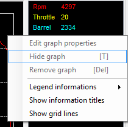
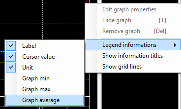
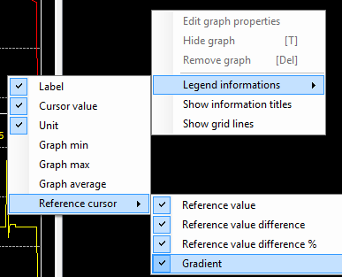

As briefly explained in the 'Main cursor' and 'Reference cursor' sections, legend shows plotted trace values at the position of the main cursor.

If you make a right-click on the legend, the legend contextual menu will pop up and shows all available legend options.

The 'Legend information' menu propose you to define what information you want to see in the legend.

There are six information that you can make visible or invisible. Just check infos that you want to see, unchecked info will be invisible.
In case of the reference cursor function usage, there are an extra bunch of infos that you can make visible.

Menus 'Show legend information titles' and 'Show grid lines' permit to show and hide the legend header and legend grid lines.

A right-click on a legend item will enabled trace related function of the legend.

Menu 'Edit graph properties' will open the selected trace 'Detailed serie properties' windows in order to fine tune graphical properties of a particular trace.
'Hide graph' command will hide the selected trace in the graphic area. Alternatively, once a trace hidden, this menu becomes 'Show graph' in order to re-enable a hidden trace. This command is also available by pressing the 'T' key of the keyboard.
'Remove graph' will definitively remove a trace from the graphic area. Be careful, this operation is not revertible ! Once a trace removed it is gone for ever and you will have to add it into the graph again.
The legend panel can be hidden at any time by clicking the 'Show/Hide legend' button  of the tool bar. Once hidden click again the 'Show/Hide legend' button to re-open the legend panel.
of the tool bar. Once hidden click again the 'Show/Hide legend' button to re-open the legend panel.
Some more legend properties can be adjusted through the graphic configuration form. Please check the 'General properties' section for more details.
Created with the Personal Edition of HelpNDoc: Create iPhone web-based documentation